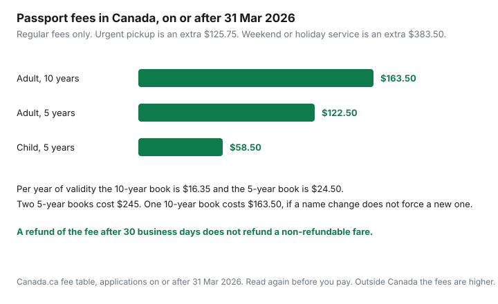

Travel · Canada
Renew a Canadian Passport Without Derailing Your Trip: Online Timeline and Checklist
An expired passport does not negotiate. It cancels the boarding, and the cheap fare you bought to “lock it in” is the expensive part. The renewal itself, for an adult in Canada, is a fee under $170 and a clock measured in business days. The derailment is booking first.
Rules and fees below were read from Canada.ca passport pages on 23 Sep 2026. Service standards are standards, not a promise that March will feel like October. NEXUS cost and break-even stay on the NEXUS guide. This page is the trip calendar around the booklet.
Disclosure: There is no natural retail offer on a passport renewal. Saving Optimizer does not claim a passport, photo-studio, or airline partnership. Some cards reimburse a trusted-traveller fee. That is a benefit you already hold or you do not. This page does not rank cards. Education only.
Key takeaways
- Online renewal is for your own adult passport, address in Canada, expiry inside six months or already expired, same name and sex marker, not travelling in the next 20 business days. Submitting it cancels the current book.
- Standards are 10 business days at a 10-day office and 20 business days online, by mail, or at a regular Service Canada Centre, plus mailing. From 1 April 2026, more than 30 business days on a complete file means the fee is refunded. The fare is not.
- In Canada, on or after 31 March 2026: $163.50 for 10 years, $122.50 for 5 years, $58.50 for a child. Urgent pickup is an extra $125.75. A weekend or holiday service is an extra $383.50.
- Photos must be commercial, in person, no more than six months old, and not edited, scanned, or run through an AI tool. A name change or a damaged book is not an online renewal.
- The day the new passport arrives, update airline profiles and existing bookings, and book the in-person NEXUS passport update. Do not fly on the old number.
- Stagger the adults. Do not put both passports in the mail the same month, and do not buy a non-refundable fare until the book you will travel on is in the house.
Who qualifies for online renewal vs in-person
In July 2026 the government removed the cap on how many eligible adults can renew online. The eligibility rules did not become optional. Canada.ca’s online page, read for this guide, requires all of the following:
- You are renewing your own adult passport. You are not applying for a spouse or a teenager.
- The passport was issued when you were 16 or older, within the last 15 years, for 5 or 10 years.
- Your home and mailing address are in Canada, and you will be there to receive it. Online renewals are not mailed outside Canada.
- The passport expires within six months or is already expired. More than six months of validity left means you cannot use the online service.
- You are not travelling in the next 20 business days. The page says delivery can add about five business days on top of processing, which is why the travel ban exists.
- The new book will use the same name, date of birth, place of birth, and gender identifier.
- The current book is not damaged, seized, or surrendered. A passport you reported lost or stolen, and then found, goes back to the program. It does not qualify you to renew online.
The moment you submit, the current passport is cancelled. It is not a backup for a long weekend you forgot about. If there is any trip inside the processing-plus-mail window, do not start the online file.
| Situation | Path |
|---|---|
| Every online rule above is true | Online, IRCC portal. Digital photo from a commercial photographer. |
| Travelling inside 20 business days | In person. Ask about express or urgent service. Do not apply online. |
| More than six months of validity left, and you still need a new book for a three-month or six-month entry rule | In person or by mail. If you are more than a year from expiry, they will ask why. Mail needs that reason in writing. |
| Name, gender identifier, or place of birth must change | Not a renewal of the simple kind. New application, with the documents for that change. |
| Child under 16 | Child passport, in person or by mail, with the custody and consent rules on the child page. $58.50 in Canada. |
| You are outside Canada | A mission, not the online service. Fees are the outside-Canada column. |
A renewal is simpler than a first adult passport because you generally do not need a guarantor. That simplicity disappears as soon as one eligibility box fails. An application that does not meet the rules is rejected and returned. You then start again, closer to departure.
Service standards and when to renew before peak summer
Canada.ca publishes two regular clocks for applications in Canada. 10 business days if you apply in person at a passport office or at a Service Canada Centre that offers 10-day processing. 20 business days if you apply online, by mail, at a regular Service Canada Centre, or at a scheduled outreach site. Mail time is not inside either number. The online instructions say delivery can add about five business days to the 20.
Faster service exists, and it is not the plan. Urgent pickup is by the end of the next business day. Express pickup is 2 to 9 business days, except some offices run longer: the urgent-services page lists Kelowna and Pointe-Claire at 4 to 9 business days and Charlottetown at 3 to 9. You need proof of travel, or a written reason if you are driving. From 31 March 2026 the urgent-pickup add-on is $125.75. Weekend or statutory holiday service is $383.50 on top of the passport fee. Those are last-resort prices. They are in the next section’s emergency list for a reason, and they are also the numbers that show why “we will just rush it in May” is a bad household plan.
| How you apply | Published standard | Extra |
|---|---|---|
| In person, 10-day office | 10 business days | Pickup rules at that office |
| Online, mail, or regular centre | 20 business days | Mailing. Online page: about five business days of delivery. |
| Express pickup | 2 to 9 business days | Some cities start at 3 or 4. Extra fee. Proof of travel. |
| Urgent pickup | End of next business day | $125.75 add-on from 31 Mar 2026 |
| Past 30 business days | Fee refunded if processing finished on or after 1 Apr 2026 | Automatic on eligible complete files. Does not include mailing. Does not refund a fare. |
The “30 business days or the passport is free” rule started 1 April 2026. Processing is counted from a complete application to the book being printed and verified. It excludes mailing. Urgent and express keep their own shorter clocks and their own refund rules. A refund of $163.50 does not buy a new flight, a new hotel, or a week of annual leave you already booked. Treat the refund as accountability, not as trip insurance.
Peak summer is why the calendar starts in winter. Offices are busier when everyone wants a June departure. The standard does not grow a footnote that says “except May,” and you should not need one. If the passport expires in August, online renewal opens only when you are inside six months, which is February. A June trip that needs the new book, because Schengen wants three months after you leave, cannot wait for a relaxed July application. February plus 20 business days plus mail can be late March. That is the month you hold the fare, not the month you start the photos.
If the expiry is further out and a destination’s rule still fails, you renew early in person or by mail and you bring the reason. “The country wants three months past my return” is a reason. “I felt like it, 14 months early” is the case they ask you to explain. Check travel.gc.ca for the countries on the trip, and ask the airline, because the carrier can be stricter than the country. The Europe and Caribbean guides name the rules we read for those regions. They are not a substitute for the page the week you fly.

Per year of validity, the 10-year book is $163.50 ÷ 10 = $16.35. The 5-year book is $122.50 ÷ 5 = $24.50. Two 5-year books are $245 against one 10-year book at $163.50. Take 10 years if you expect to keep the same name and you will travel more than once in the decade. Take 5 years if a name change is likely, or if you do not want to pay for validity you will replace. A child book is five years only, even after the child turns 16, until it expires. Outside Canada the adult 10-year fee on the same table is $266.25 and the 5-year fee is $194.25. Do not use the in-Canada numbers at a mission.
Name, photo, and previous-passport rules that cause rejects
Most refused renewals are a rule on a webpage, not a mystery at the counter. The program’s photo page says an application is refused when the photos do not meet the requirements.
- Photo. Taken in person by a commercial photographer, no more than six months before you apply. For online, a digital file, not a scan of a printed photo. Not altered: no filters, no editing software, no AI tools. Plain, light background. The page warns that white clothing can blend into that background. For mail or in person, two identical prints, and the photographer writes or stamps the studio name, full address, and the date on the back of one. Adult renewals do not need a guarantor’s signature on the photo. Get a digital file and prints the same day so a failed online attempt can move to the counter without a second studio visit.
- Name. The renewal path keeps the name on the current passport. A different surname after marriage, divorce, or a legal change is a different application: proof of citizenship, ID in the name you want, and the certificate or court order that joins the old name to the new one. Dropping or inverting a given name has its own rule on the help page. Do not “fix” the spelling in an online form and hope.
- Gender identifier. It has to match, including an X observation. A change of identifier is not an online renewal.
- Previous passport. Issued at 16 or older, inside 15 years, 5- or 10-year validity. A damaged book needs a declaration (form PPTC 203) when it is still valid, and you send the damaged book. You do not quietly renew a book with a torn bio page as if it were intact. A limited-validity passport is a reason people apply again; it is not automatically the simple online path.
- Early renewal. More than a year before expiry, they ask why. By mail, the explanation has to be in the envelope.
Order the studio before you open the portal. A photo from last year’s visa application is often too old. A selfie is not a workaround. The fee you pay on a file that comes back is time, which is the thing the trip cannot spare.
Update NEXUS and airline profiles the day the new passport arrives
The new number is useless until the systems that check it have the number. Do this the day the booklet is in your hand, not the week you fly.
- Airline profiles. Aeroplan, WestJet, Air Canada, and any other profile that stores a passport for check-in. Then open existing reservations and replace the document. A booking made on the old number can fail online check-in even when the new book is in the bag.
- NEXUS. CBSA’s rule, as used on the NEXUS guide and re-read with that page: passport and citizenship updates are done in person at an enrolment centre. CBP’s side of the same program: membership does not die when the passport expires, and you cannot use the Global Entry-style airport and land benefits until the new passport is in the system. Book the centre when the book arrives. A website checkbox is not the update.
- Other forms that copied the old number. A tour-operator file, a cruise line, a visa application already in progress. The Caribbean and Europe pages both tell you to satisfy the entry rule before you deposit. The deposit is the wrong moment to discover the number on the invoice is the cancelled one.
Children with their own NEXUS cards need their own update when their own passport changes. A parent’s new book does not flow down. The fee waiver for under-18s is explained on the NEXUS page. It does not waive the appointment.
Emergency travel documents—last resorts only
Urgent service is what you use when the ordinary clock cannot save a trip you have already proved you must take. It is a poor way to buy an ordinary vacation.
- In Canada: urgent pickup by the end of the next business day ($125.75 add-on), express in 2 to 9 business days, or weekend and statutory holiday service ($383.50). You show a ticket or, if you are driving, a written statement. If you already applied and now need the book inside nine business days, the program says to call. Extra fees may apply, including a file transfer if the application is sitting in another office.
- Temporary passport, abroad: issued by a Canadian mission for an urgent, proven need, white cover, valid only for the trip and for no more than one year, and not extendable. The fee table from 31 March 2026 lists a temporary passport at $125.75, and the payment page says you pay it when you already applied and paid for a regular passport and need a document in under 20 business days. You sign an exchange agreement. The temporary-passport page says the exchange date falls within 60 days of that agreement, and that exchanging it in person in Canada can add a fee (the page still shows $20; confirm it, the page’s own date stamp is old). A temporary passport is not a regular passport. Travel.gc.ca warns that other countries may not accept it the same way.
- Emergency travel document, abroad: one trip. The fee page describes it as a direct return to Canada, a return to your country of residence, or a trip to a place where full passport services exist. Contact the mission before you pay. The officer decides whether you qualify. Do not treat a forum’s “they always issue one” as the rule.
None of these replace a book renewed in February. A weekend fee of $383.50 plus a passport fee is still cheaper than a forfeited fare, and it is still the outcome you plan to avoid. If you are already abroad and the book is lost, the mission is the path. The travel-medical guide is a different problem: an emergency document does not pay a hospital.
Household calendar: stagger adult renewals before booking non-refundable fares
Two adults who submit online the same week have zero valid passports in the house until the mail comes back. One illness, one lost envelope, one photo reject, and the household cannot travel. Stagger them. One adult renews. The book arrives. The other adult starts. A child application can run beside one adult, not instead of a plan, because the child file has its own consent rules and its own clock.
A workable order for a summer trip:
- Nine to twelve months out, read expiry dates against the strictest country on the draft list. Schengen’s three months after departure will fail earlier than the expiry printed on the book. A Caribbean airline that wants six months will fail earlier than Jamaica’s “valid for the stay” line. Write the fail date, not the expiry date.
- As soon as online is legal, or earlier in person if the fail date says so, book the photographer and submit one adult. Put the 20-business-day mark and a mail buffer on the calendar.
- When that book arrives, update the airline profile and book the NEXUS centre if you have a card. Then start the second adult.
- When every traveller’s book is in hand, buy the non-refundable fare and the package deposit. The booking window (international economy cheapest at 15–30 days in Expedia’s 2026 Canada data) is a price tool. It loses to a passport that is still in a queue. Buy inside the window you can still use after the book exists. Do not skip the passport to chase $190 of average savings.
- Child turning 16 during the validity of a child passport can keep using it until it expires, then applies as an adult. Do not wait until the week of a graduation trip to discover the child book expired at 15 and the new adult file needs a full application.
Fees for two adults on the 10-year book are $327 in Canada. That is the cheap line on a Europe or Caribbean sheet. The expensive line is a fare you cannot change because the portal said the old passport was fine and the airline disagreed at the desk. Put the renewal on the same one-year calendar as the month you intend to travel. The month is a fare decision. The passport is the permission to use it.
Sources & date stamps
- Canada.ca, renew online, and “check if you can renew” — eligibility, six-month window, 20-business-day travel rule, cancellation of the current passport, early-renewal explanation. Used 23 Sep 2026.
- Canada.ca, passport service standards and urgent, express, and weekend services — 10 and 20 business days, urgent by end of next business day, express 2 to 9 with the longer offices named. Used 23 Sep 2026.
- Canada.ca, fee changes on or after 31 March 2026 — in-Canada 10-year $163.50, 5-year $122.50, child $58.50; urgent pickup $125.75; weekend or holiday $383.50; temporary passport $125.75; outside-Canada adult fees $266.25 and $194.25. Annual adjustment under the Service Fees Act.
- Canada.ca, 30-business-day refund — processing completed on or after 1 April 2026, automatic on a complete eligible file, mailing excluded. News release 2026.
- Canada.ca, 2 July 2026 news — online renewal opened to all eligible adults in Canada, same 20-business-day standard as other simplified renewals.
- Canada.ca photo, lost-or-damaged, and temporary-passport pages — commercial photo rules, PPTC 203, temporary passport maximum one year. The temporary-passport page’s exchange note is older than the 2026 fee table. Confirm the exchange fee at the office.
- CBSA and CBP, as summarized on the NEXUS guide — passport update in person; benefits that depend on the passport wait for that update. Used 23 Sep 2026.
Frequently asked questions
Who can renew a Canadian passport online?
An adult renewing their own passport, with a home and mailing address in Canada, if the current passport was issued in the last 15 years when they were at least 16, was valid for 5 or 10 years, is not damaged, and will keep the same name, date of birth, place of birth, and gender identifier. It must expire within six months or be expired already, and you must not be travelling in the next 20 business days. Submitting the online renewal cancels the current passport. Children cannot use this adult online service.
How long does a Canadian passport renewal take?
The published standard is 10 business days in person at a passport office or a Service Canada Centre that offers 10-day processing, and 20 business days for online, mail, and regular Service Canada Centres. Mailing is extra. The online page says delivery can add about five business days. From 1 April 2026, a complete application processed in more than 30 business days qualifies for an automatic refund of the passport fee. That refund does not pay for a missed trip.
What does a Canadian passport cost in 2026?
For applications in Canada on or after 31 March 2026, the 10-year adult passport is $163.50, the 5-year adult passport is $122.50, and a child passport is $58.50. Urgent pickup is an extra $125.75. Weekend or statutory holiday service is an extra $383.50. Fees outside Canada are higher. The fee table is adjusted under the Service Fees Act, so read it again before you pay.
Do I need to update NEXUS when my passport is renewed?
Yes, before you rely on the card. CBSA says passport updates are done in person at an enrolment centre. Membership does not end when the old passport expires, and you cannot use the airport and land benefits tied to that document until the new passport is on the file. Update airline profiles and existing bookings the day the new book arrives. The NEXUS cost and break-even are a separate guide.
Should I book the flight before the new passport arrives?
Not a non-refundable one. Online renewal is unavailable if you travel within 20 business days, and the old passport is cancelled when you submit. Schengen wants three months of validity after you leave, which can fail before the expiry date printed in the book. Have the new passport, then buy the fare inside the booking window you can still use.